Las góndolas que no se alquilan (marca propia, categorías, promociones) también hay que armarlas bien. El planograma dice qué va en cada parte de la cara; al publicarlo sale una guía de montaje numerada, sin precios, que quien monta abre en el celular o imprime.
| Palabra | Qué es |
|---|---|
| Destino | Lo que va en un pedazo de la cara: una marca propia («Arroz La Esquina»), una categoría («Aceites»), una promoción («Granos 2×1»), un producto o grupo, u otro. |
| Pieza | El dibujo de un destino sobre la cara, con su % (por ejemplo, 30 % de la cara). |
| Versión | Cada vez que se publica, sale una versión nueva con fecha. La anterior queda en el historial. |
| Guía de montaje | La hoja numerada de cada versión: qué va dónde, en centímetros y estantes. |
Cuándo: una góndola de la casa todavía no tiene guía (Sin repartir), o hay que cambiar lo que va en ella.
Abrí la ficha del mueble en el Plano (acá GON-12, No comercializable). En La cara hay una tarjeta por cara con su estado y su botón: Distribuir la cara si está sin repartir, o Ver o cambiar el reparto si ya tiene versión. También se llega desde Plano › Caras (7.13).
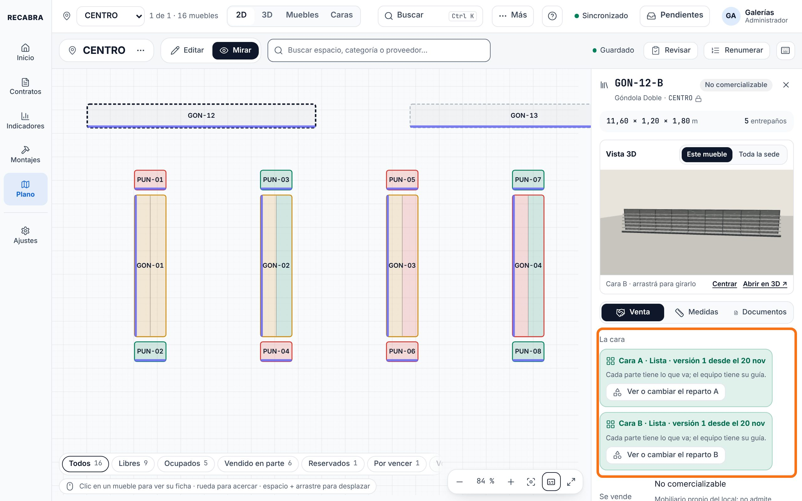
Arriba de la pantalla están los 3 pasos: (1) Elegí qué va, (2) Dibujalo en la cara y (3) Publicá con una fecha. El que toca hacer está remarcado; los hechos llevan ✓. Cara A / Cara B cambia de lado.
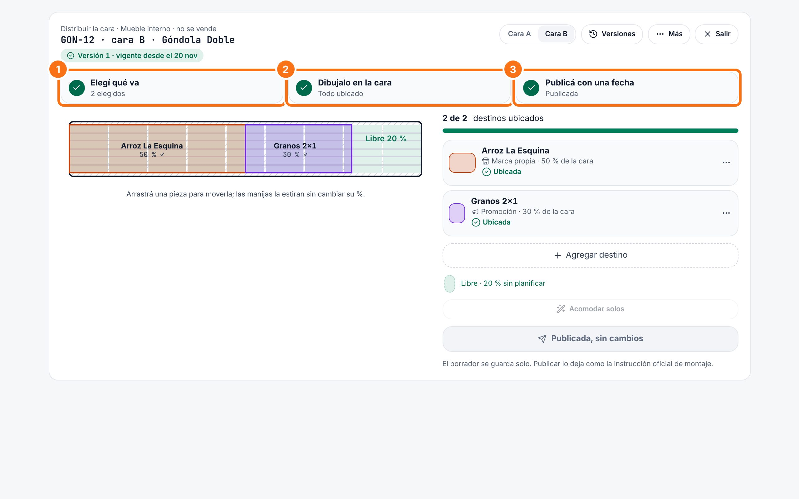
Mientras trabajás, arriba dice Borrador de la versión 2 · la 1 sigue vigente: el borrador se guarda solo y la tienda sigue con la versión vigente hasta que publiques.
Tocá Agregar destino. Escribí el Nombre («Lácteos»), elegí Qué es (Categoría, Marca propia, Producto o grupo, Promoción u Otro) y Cuánto de la cara en % (la ayuda dice cuánto queda). Cómo se monta es opcional: lo lee quien monta en su guía. Tocá Agregar a la cara.
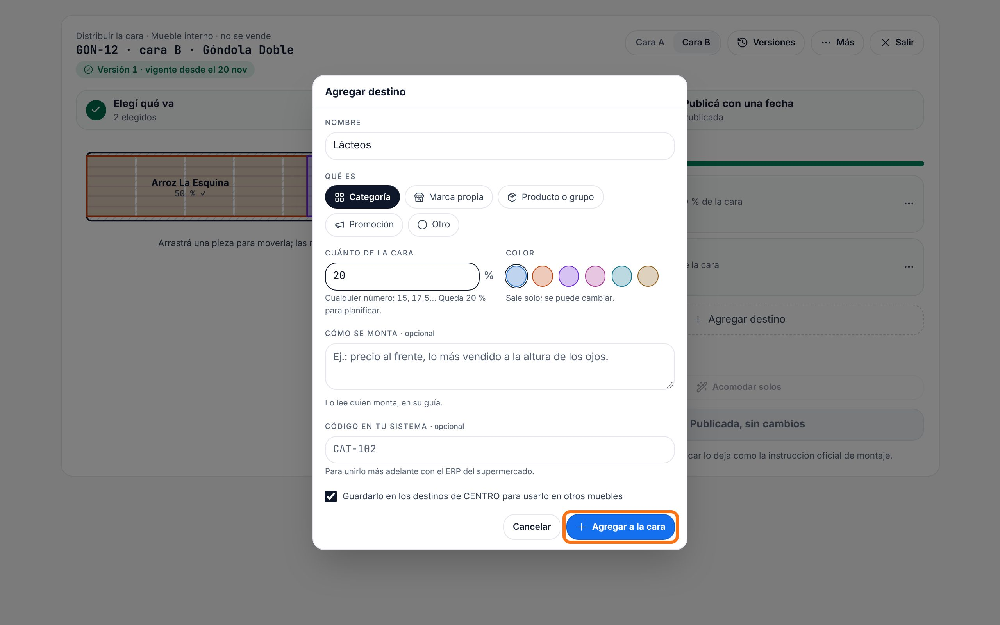
Con la casilla Guardarlo en los destinos de CENTRO para usarlo en otros muebles marcada, la próxima vez aparece para elegirlo sin escribirlo de nuevo. Una promoción con fecha de fin se publica con Tiene fin (8.4).
El destino nuevo dice Arrastrala a la cara y abajo Falta ubicar Lácteos. Lo libre de la cara está en verde.
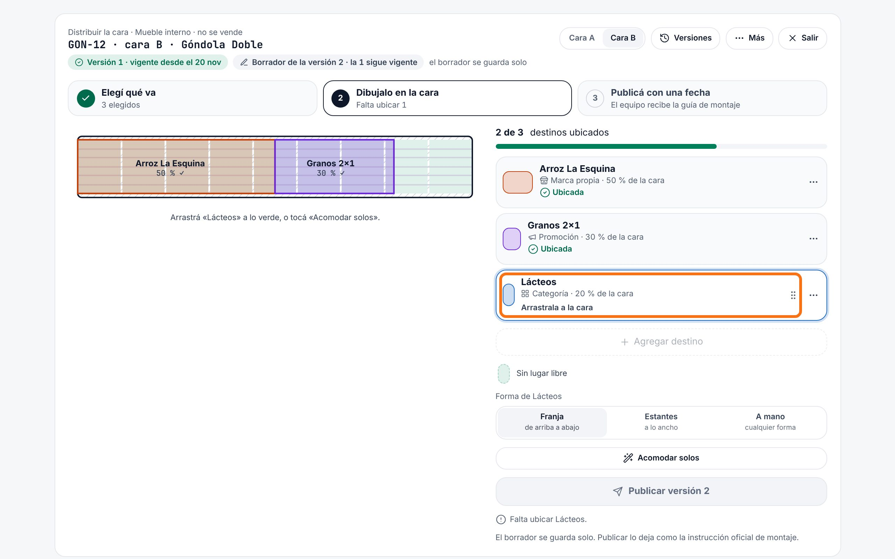
Arrastrá la tarjeta (de los puntitos ⋮⋮) hasta lo verde. Queda Ubicada y el paso 2 dice Todo ubicado. Las manijas cuadradas estiran la pieza sin cambiar su %. Forma: Franja (de arriba a abajo), Estantes (a lo ancho) o A mano. Si no querés acomodar, Acomodar solos lo hace.
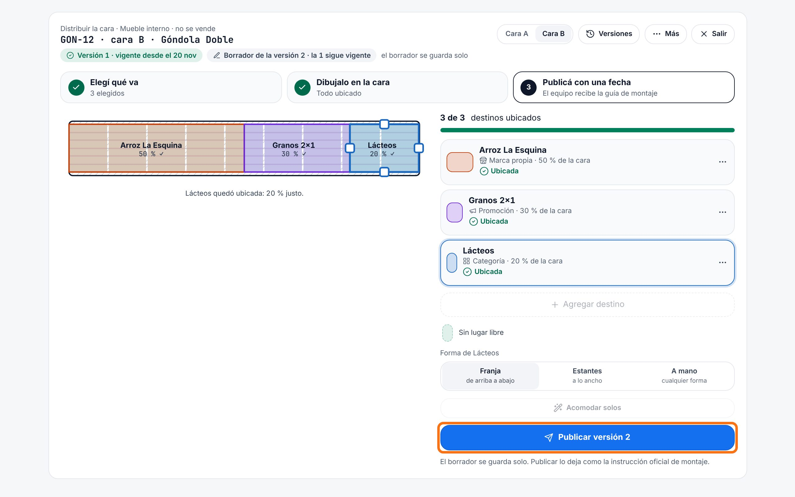
Tocá Publicar versión 2. Elegí Rige desde (hoy o después) y, si es una promoción, Tiene fin con su fecha. Revisá Qué cambia contra la versión 1 y tocá Publicar versión 2.
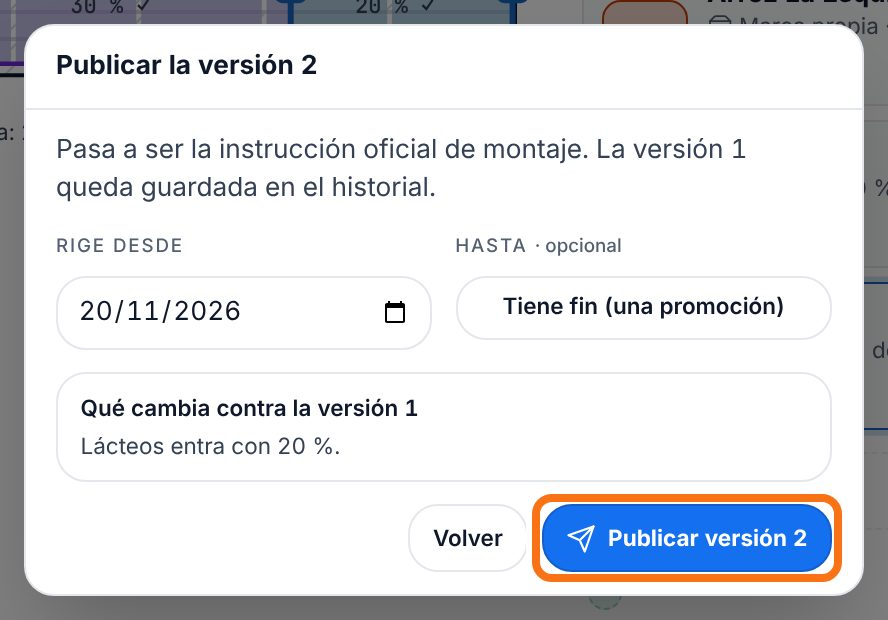
Listo cuando ves Listo: la versión 2 quedó publicada. Rige desde el 20 nov. Para que la monten: con dos botones: Ver e imprimir la guía (1) y Mandarla a quien corresponde (2).
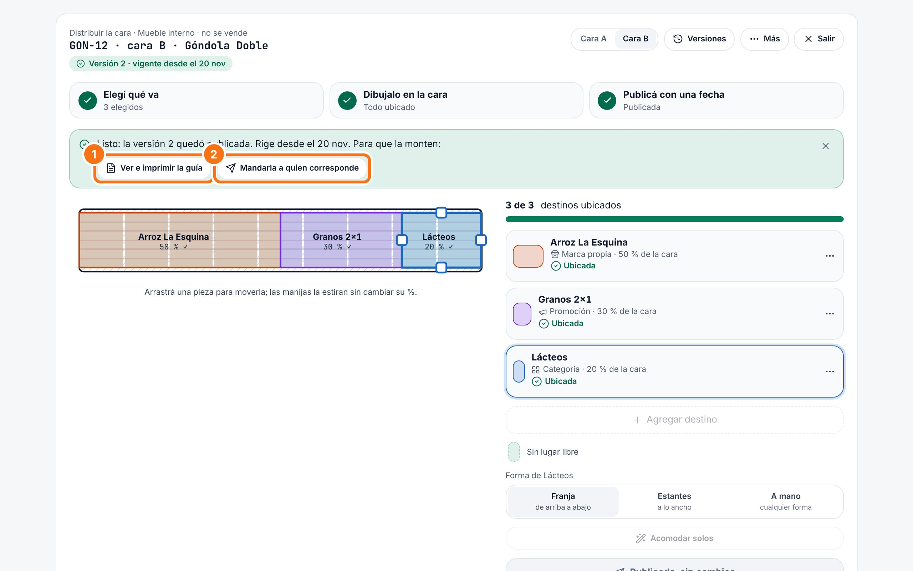
Una versión publicada no se borra ni se cambia: para cambiarla se publica la siguiente. Si publicaste mal, corregí el dibujo y publicá la versión 3; la 2 queda reemplazada en el historial.
Cuándo: apenas publicás. La guía no sale sola: la mandás vos.
Tocá Mandarla a quien corresponde. Aparecen los correos de la sede: quien monta (Monta en CENTRO, ya marcado) y la administración. En OTROS CORREOS podés sumar el de un proveedor o de otra persona. Tocá Mandar a 1 (el número es cuántos marcaste).
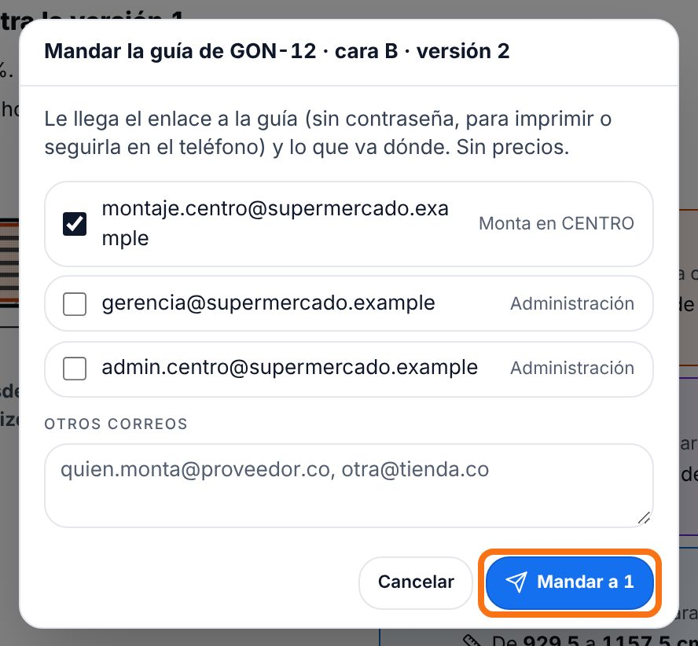
Listo cuando ves Listo: la guía salió a montaje.centro@supermercado.example. Debajo está la guía como la recibe quien monta: qué cambia, qué va dónde (en centímetros desde la izquierda y en estantes contados desde arriba) y la lista de Al terminar.
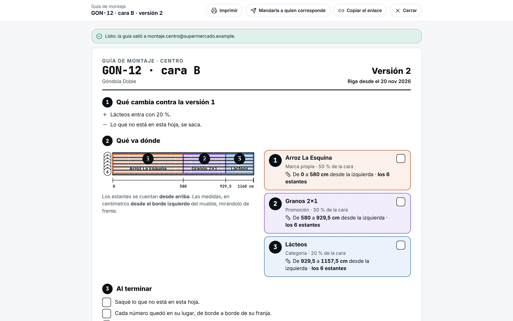
En la guía, Imprimir la saca en una hoja A4 (sin precios) para pegarla en el mueble, y Copiar el enlace copia el enlace para mandarlo por WhatsApp. El enlace no pide contraseña: mandalo sólo a quien monta.
Ajustes › Equipo › Cortar un enlace: pegalo ahí y deja de abrir. Pedile a quien maneja la cuenta si no ves esa opción.
Tocá Versiones. Cada versión dice si está vigente o reemplazada, quién la publicó, desde cuándo rige y cómo va su montaje (Sin montar, Montada · falta revisar, Coincide…). Ver muestra el dibujo y Guía abre su hoja.
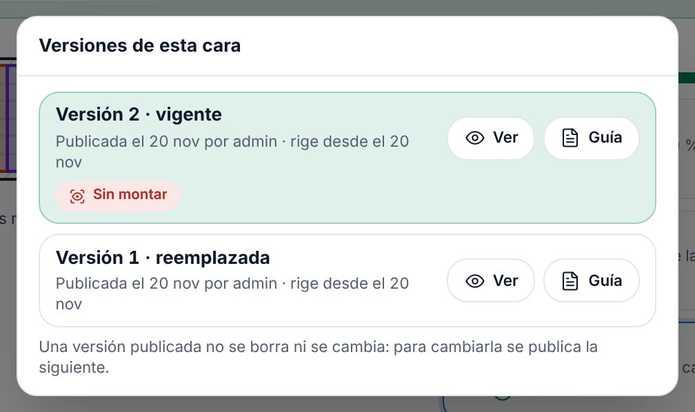
Cuándo: quien monta avisó desde la guía que quedó montada (o que no se pudo). Sale en Pendientes › Hoy como Planograma montado por revisar.
Abrí Pendientes (arriba) y, en PLANOGRAMA MONTADO POR REVISAR, tocá Revisar en la cara (acá GON-13 · B · versión 1).
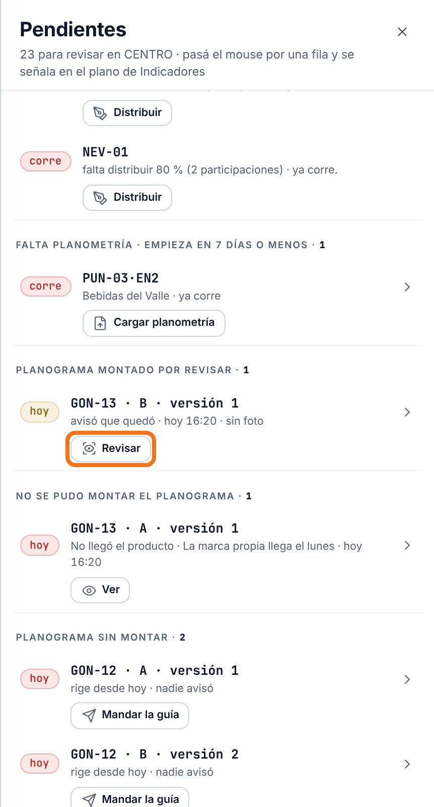
Se abre Revisar el montaje: a la izquierda LO PLANIFICADO, con los números de la guía; a la derecha LO QUE SE MONTÓ (la foto, si la subieron). En ¿Quedó como la guía?: si está bien, Sí, coincide —o, sin foto, Lo vi en la tienda: coincide (1)—. Si no, No coincide (2).
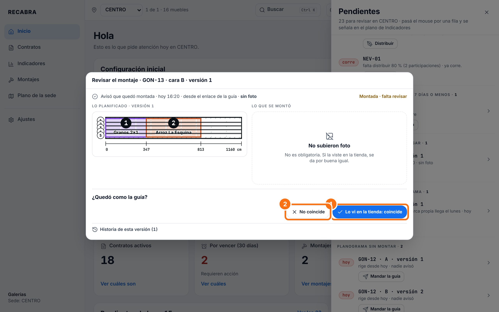
Con No coincide, tocá los números que quedaron mal (lo que no toques, quedó bien; Otra cosa si es otro problema), escribí Qué hay que corregir y dejá marcada Mandarle la guía de nuevo a quien monta, con esta nota. Tocá Guardar y mandar la guía.
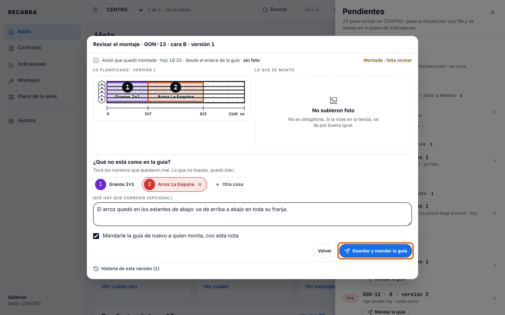
Listo cuando ves Guardado: no coincide. La guía salió a montaje.centro@supermercado.example con la nota. Quien monta ve arriba de la guía Hay que corregir con tus números y tu nota.
En Pendientes sale como No se pudo montar el planograma, con el motivo (por ejemplo No llegó el producto) y la nota. Resolvé la causa (pedir el producto) y volvé a mandar la guía cuando se pueda. Si nadie avisó, sale como Planograma sin montar con Mandar la guía.
Por defecto, sólo administración planifica y publica. En Más › Quién planifica y publica (o Ajustes › Equipo) se puede habilitar También el equipo: los trabajadores planifican sólo los muebles que no se venden.